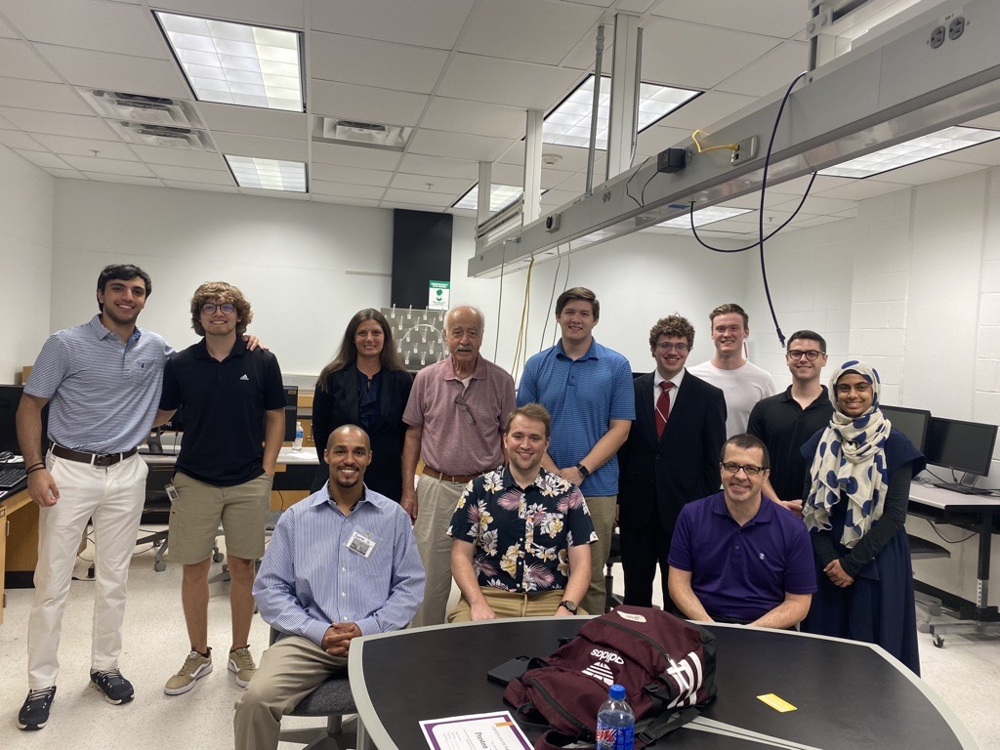
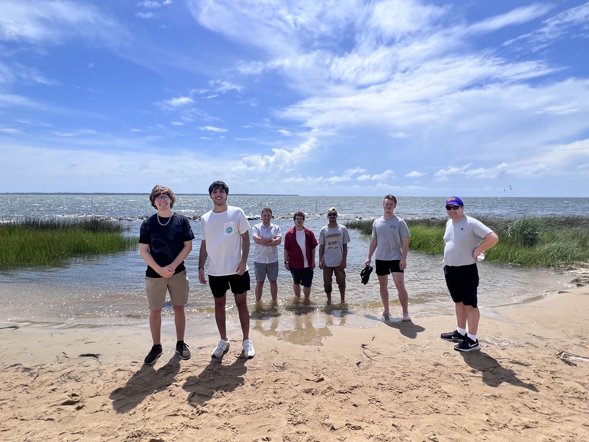

Engineering Related Courses & Certifications
Note: G represents graduate-level courses. Enrolled in the M.S. Software Engineering program or consent of instructor.
Applied Agile planning, effort estimation, and risk management to scope software delivery and align engineering execution with stakeholder goals.
Focused on refactoring, technical debt reduction, and change-impact analysis to safely evolve legacy codebases while preserving quality and delivery velocity.
Software project development using software engineering principles and current software development techniques.
Methods and processes for managing, analyzing and specifying requirements; use-case modeling; systems for requirements analysis and management.
Application of technical and professional skills in solving a real-world problem in a team environment. Professional code of conduct, intellectual property, patents and copyrights, legal and ethical issues, entrepreneurship, and transition from student to software engineering professional.
Software quality metrics associated with process and product metrics. Examines development of software using various types of metrics and models employed in the field of software engineering.
Signals, access protocols, application requirements, and security issues with a focus on digital data transfer.
Application of technical and professional skills in solving a real-world problem in a team environment. Topics include professional code of conduct, intellectual property, patents and copyrights, legal and ethical issues, entrepreneurship, and transition from student to software engineering professional.
Software quality attainment through software testing and other alternatives to quality assurance, including process improvement, inspection, fault tolerance, and reliability assurance.
Techniques for developing applications and services to run on distributed networks using virtualized resources accessed over the Internet.
Software construction tools and practice, including software development environments, object-oriented programming, software specification, automated testing, version control, and build management for software systems.
Fundamental algorithms and computational models for core tasks in natural language processing. Word and sentence tokenization, parsing, information and meaning extraction, spelling correction, text summarization, question answering, and sentiment analysis.
Advanced methods and techniques to initiate, plan, and control large and complex software development projects. Emphasis is placed on various Agile approaches.
Concepts, technologies, and building blocks from computer science and practical software engineering required for developing web applications. Web application architectures, client and server-side programming, state management, authentication, and authorization.
Mathematical techniques and algorithms for image sampling, quantization, intensity transformations, spatial filtering, Fourier transforms, frequency domain filtering, restoration and reconstruction, morphological image processing, and segmentation.
Computing in environments with limited resources and low power, fault tolerance, and persistence. Mobile application frameworks and development environments. User interface design and evaluating user experience.
Designing iterative development processes, modeling and analysis of software systems, object-oriented design, and design patterns using C#.
Relational database systems theory and database development. Topics include relational data model and integrity constraints specification, data modeling and relational schema design, normalization of relational schema, relational algebra, SQL, and database programming.
Practice in writing about technical problems of significance to students.
Design and analysis of computer communication networks. Topics include application layer protocols, Internet protocols, network interfaces, local and wide area networks, wireless networks, bridging and routing.
Methods and processes for eliciting, evaluating, managing, analyzing, documenting, and specifying software-intensive systems for achieving objectives, functions, qualities, and constraints.
Design and analysis of algorithms using recursion, dynamic programming, and branch and bound. Solving computational problems using maps, hash tables, skip lists, and graph data structures.
Principles of discrete mathematics, including combinatorial proofs, discrete probability, recurrence relations and generating functions, graphs and trees, and analysis of algorithm efficiency. Application of discrete mathematical concepts to solving software engineering problems.
Introduction to data structures and their implementation. Computational problem-solving using data structures.
Fundamentals of discrete mathematics, including logic and elementary proofs, sequences, induction and recursion, sets and relations, and elementary number theory. Application of discrete mathematical concepts to solving software engineering problems.
Introduction to modern software engineering and computational problem-solving using object-oriented principles and a high-level programming language.
Institution :Microsoft
Designed for beginners, providing a comprehensive introduction to Python and fundamental programming concepts. It covers Python syntax, control structures, functions, error handling, and file operations through interactive exercises and projects. This self-paced course, ideal for those new to programming, offers a flexible learning path complemented by a certificate of completion from Microsoft.
Date of Completion :July 31st, 2019
https://courses.edx.org/certificates/fcb518bbd47a427a9a75db8fc2c0e848
Institution :International Business Machines Corporation (IBM)
Aimed at introducing Python programming in the context of data science. It focuses on fundamental Python programming techniques and concepts, including data structures, loops, and Python libraries, essential for data analysis and visualization. The course is designed for beginners and combines theoretical knowledge with practical exercises, making it ideal for those looking to apply Python skills in data science projects.
Date of Completion :June 11th, 2019
https://courses.edx.org/certificates/2c00165eb4e245d2be44bf64a1dfd070
Institution :University of Michigan
An in-depth exploration of web application development using Django, a high-level Python web framework. It covers the fundamentals of building web applications, including database models, the Django template system, forms, and user authentication. Designed for those with basic programming knowledge, this course provides practical skills and insights into developing robust web applications efficiently using Django.
Date of Completion :May 17th, 2022
https://www.coursera.org/account/accomplishments/verify/DDVPAPJ6BTWM
Institution :University of Michigan
Focuses on advanced techniques in web development using the Django framework. It delves into complex aspects of web application building, such as user interactivity, data models, and the integration of external services. This course is designed for individuals with a foundational understanding of Django, aiming to enhance their skills in creating more sophisticated and dynamic web applications.
Date of Completion :May 24th, 2022
https://www.coursera.org/account/accomplishments/verify/D49ENBABG9RW
Education
East Carolina University (ECU)
Greenville, NC
M.S. Software Engineering
08.2025 – 05.2027
East Carolina University (ECU)
Greenville, NC
B.S. Software Engineering
01.2022 – 05.2026
Pitt Community College (PCC)
Winterville, NC
Associates in Science
08.2020 – 08.2025
Divers Institute of Technology (DIT)
Seattle, WA
Professional Commercial Diver
07.2015 – 02.2016
Relevant Work Experience
Assistant Instructor
East Carolina University (ECU)
Greenville, NC
(06/2024 - 07/2024)
ECU’s STEM Mavericks Camp was a weeklong dive into circuits, robotics and coding for high schoolers from underrepresented and military families. Each student got their own Raspberry Pi, hooked up sensors and wrote Python scripts to build fun projects—like sequenced LED “traffic lights”—then showed off their creations at the end of the week.
- Mentored and supported 62 high school students—drawn from economically stressed Tier 1 counties and military-dependent families—in three intensive one-week STEM sessions.
- Designed and delivered hands-on labs using Raspberry Pi, electronic sensors, and Python to teach fundamentals of signal flow, circuitry, and coding.
- Guided students through building and programming LED “traffic signal” circuits, troubleshooting hardware/software issues, and reinforcing debugging skills.
- Facilitated student presentations for parents and camp leadership, coaching effective communication of technical concepts and project outcomes.
- Collaborated with ECU faculty and DoD CDAO representatives to expose underrepresented youth to defense-relevant technologies and career pathways.
- Learn more about the STEM Mavericks Camp
Self-Help Research Assistant
East Carolina University (ECU)
Greenville, NC
(03/2024 - 05/2024)
ECU is conducting research on all the Software Engineering Graduate Degree programs in the nation. The purpose for the research is to use data science analysis techniques to make comparisons between ECU's program and other competing universities for ECU's program improvement.
- Develop a research plan to systematically assess national graduate programs in Software Engineering.
- Document the research process and maintained effective communication with program administrators, ensuring transparency and alignment.
- Apply machine learning algorithms to analyze the data, crafting visual representations that facilitated insightful conclusions and strategic recommendations.
- View the Results
ML Research Intern
National Science Foundation (NSF)
Greenville, NC
(04/2023 - 07/2023)
The National Science Foundation's (NSF) Research Experience for Undergraduates (REU) program is designed to provide undergraduate students with hands-on, research-based experiences in various scientific and engineering disciplines. The program aims to introduce students to academic research, encouraging them to pursue graduate studies or careers in research and development. The program seeks to equip students with critical skills in AI and ML, promote diversity in the research community, and address current challenges by encouraging innovative, interdisciplinary research projects.
- Conducted comprehensive research on "No-Code Software Development," analyzing over 50 scholarly papers to identify key challenges and emerging opportunities, enhancing understanding of the field's landscape.
- Enhanced technical proficiency in Overleaf and LaTeX, and mastered Axiom for efficient data scraping, successfully automating the extraction of insights from over 2,000 software reviews for comprehensive analysis.
- Utilized Python and Jupyter Notebook alongside IBM's AutoAI for advanced data analysis, uncovering significant trends and patterns in software development practices and user experiences, contributing to actionable research findings.
- Advanced public speaking and presentation skills delivering weekly updates and a capstone presentation at a research symposium, effectively communicating complex research findings to both technical and non-technical audiences, fostering peer and mentor engagement.


Professional References
Alex Vilkomir| East Carolina University | Senior Software Engineer & Instructor
(# Provided Upon Request)
Brian Dietrick| East Carolina University | Senior Software Engineer & Instructor
(# Provided Upon Request)
Clinton Wimberly| Inter-Technologies | Senior Design Engineer
(# Provided Upon Request)
Organizations
Association of Computer Machinery
(ACM)
National Society of Black Engineers
(NSBE)